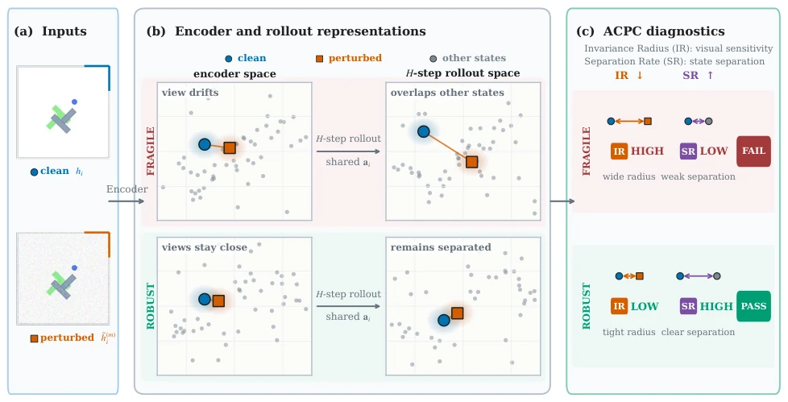
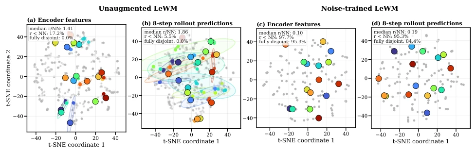
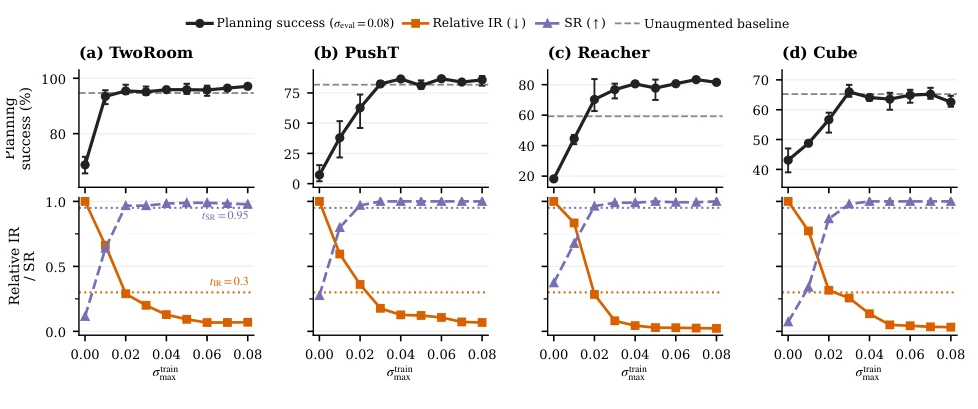
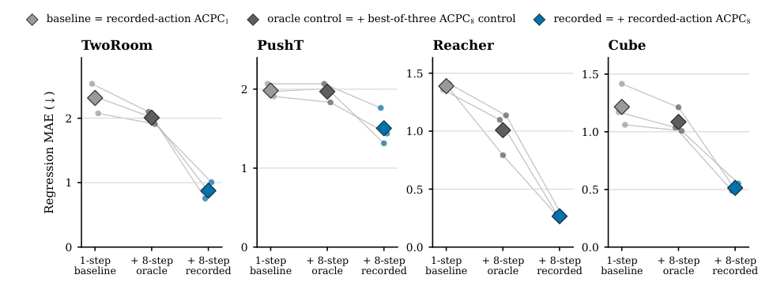
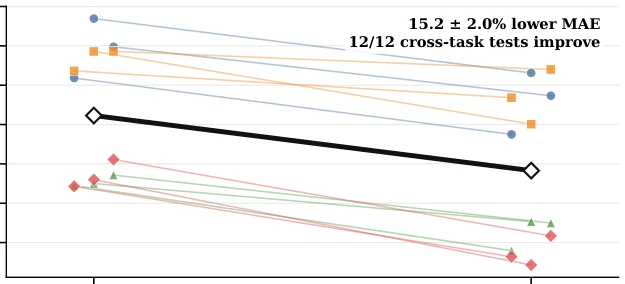
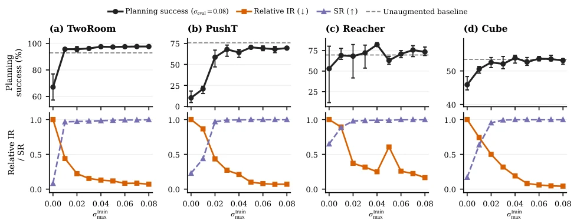
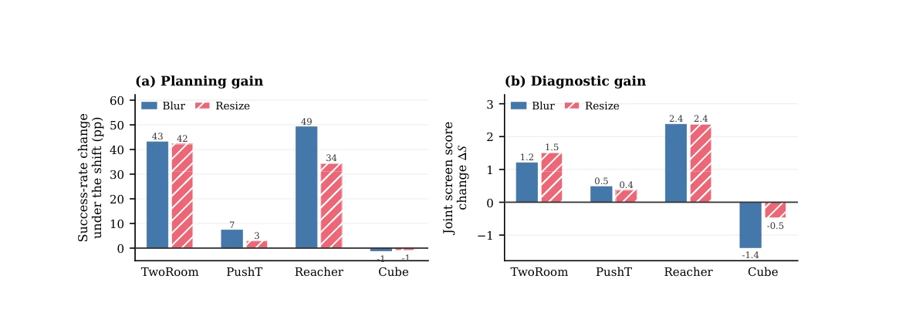
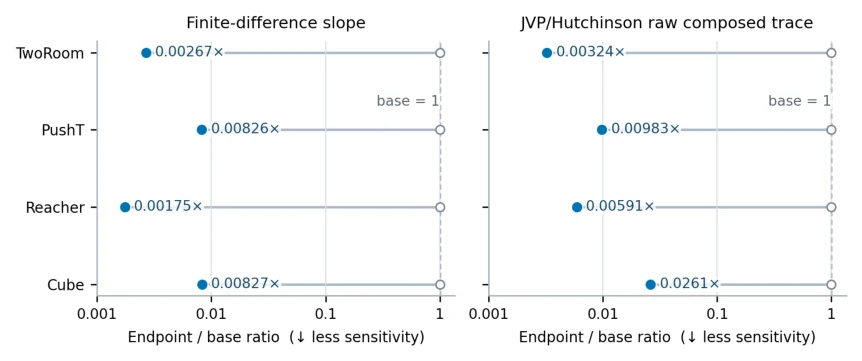

这篇论文给 JEPA 世界模型来了个“体检套餐”。JEPA 虽然省去了像素重建的麻烦，但潜空间照样会被视觉噪声带偏。作者没急着改架构，而是搞了个 ACPC 诊断器，用“同动作下干净与扰动轨迹的距离”来量化鲁棒性。IR 和 SR 两个指标挺有意思，一个防过拟合（怕扰动变大），一个防坍塌（怕状态分不清）。理论推导给预测误差和规划成本上了界，这点比纯实验派强。不过，这玩意儿终究是个“事后诸葛亮”，训练时不直接优化它，光靠筛选 checkpoint 有点被动。而且 IR 低不代表真鲁棒，SR 高也不代表能干活，得配合规划成功率看。总的来说，是个实用的诊断工具，但别指望它能直接替代数据增强。
This paper provides a "check-up package" for JEPA world models. Although JEPA avoids the trouble of pixel reconstruction, the latent space can still be skewed by visual noise. Instead of rushing to modify the architecture, the authors developed an ACPC diagnostic tool, quantifying robustness using the "distance between clean and perturbed trajectories under the same action". The two metrics, IR and SR, are quite interesting: one prevents overfitting (fearing increased perturbation), and the other prevents collapse (fearing indistinguishable states). Theoretical derivations provide bounds for prediction error and planning cost, which is stronger than a purely experimental approach. However, this tool is ultimately a "hindsight expert"; it is not directly optimized during training, relying solely on filtering checkpoints is somewhat passive. Moreover, low IR does not mean true robustness, and high SR does not mean it can work effectively, it needs to be viewed in conjunction with planning success rate. Overall, it is a practical diagnostic tool, but do not expect it to directly replace data augmentation.
The JEPA architecture attempts to ignore irrelevant visual details [3, 4, 5, 6, 7] by predicting latent space representations rather than pixel reconstruction. However, this does not mean it is immune to visual perturbations; encoded representations may still drift due to noise, thereby affecting subsequent predictions. Existing encoder distances or single-step diagnostics fail to capture how perturbations are amplified or contracted during multi-step rollouts. Although Bisimulation [8, 9] emphasizes that state equivalence should be based on action consequences rather than appearance, there is a lack of metrics directly measuring this "action-conditioned consistency". Furthermore, model accuracy does not always align with downstream control performance [40], requiring evaluation methods that reflect long-horizon rollouts and planning impacts. Therefore, the authors propose ACPC, aiming to quantify the divergence degree of clean history and perturbed history on latent space trajectories under the same action sequence, serving as a diagnostic tool rather than a direct training objective.
方法Method
整体流程是冻结世界模型，输入成对的干净历史 $h$ 和扰动历史 $ ilde{h}$，在相同动作序列 $a$ 下向前 Rollout $H$ 步。ACPC 计算两者预测轨迹在投影潜空间中的加权距离（公式 3），低值表示一致性好。理论部分证明了 ACPC 能 bound 多步预测误差的变化（命题 1）和规划候选项成本的变化（命题 2），无需分布假设。为了评估 checkpoint，作者定义了 Invariance Radius (IR)，通过多个 anchor 的 ACPC 归一化后取分位数，衡量对扰动的敏感度；以及 Separation Rate (SR)，检查不同状态在 rollout 后是否仍保持可区分。最后将 IR 和 SR 结合成筛查分数，只有 IR 低且 SR 高才算通过。相对 IR 用于跨训练条件比较。
The overall process freezes the world model, inputs paired clean history $h$ and perturbed history $ ilde{h}$, and rolls forward $H$ steps under the same action sequence $a$. ACPC calculates the weighted distance between their predicted trajectories in the projected latent space (Formula 3), where a low value indicates good consistency. The theoretical part proves that ACPC can bound the change in multi-step prediction error (Proposition 1) and the change in planning candidate cost (Proposition 2), without distributional assumptions. To evaluate checkpoints, the authors define Invariance Radius (IR), measuring sensitivity to perturbations by taking quantiles after normalizing ACPC across multiple anchors; and Separation Rate (SR), checking whether different states remain distinguishable after rollout. Finally, IR and SR are combined into a screening score, where only low IR and high SR count as passing. Relative IR is used for cross-training condition comparison.

Figure 1: Conceptual overview of ACPC, IR, and SR. (a) A logged clean history and a visually perturbed view of it form the paired inputs. (b) A frozen world model encodes both views and rolls them forward for H steps under the same recorded action sequence. ACPC measures the distance between the two predicted trajectories. In the fragile case, perturbation-induced spread grows and overlaps representations of other states (gray); in the robust case, the paired views remain close while other states stay separated. Layouts are schematic: only within-panel proximity is meaningful, and positions enter no reported metric. (c) The Invariance Radius (IR) summarizes perturbation-induced rollout spread across histories, while the Separation Rate (SR) measures how often selected different-state rollo
实验Experiments
实验在 LeWM [10] 和 PLDM [12] 上验证，涵盖 TwoRoom 导航、PushT 操作等四个控制任务。扰动包括高斯噪声、模糊和缩放。主要发现包括：ACPC 能有效预测扰动引起的预测误差漂移（图 4），且比单步距离或控制变量更有效；在 CEM 规划中，候选项特定的 ACPC 能预测因扰动导致的规划成本变化（图 5）。Checkpoint 层面的 IR 和 SR 指标在 Gaussian 噪声训练 sweep 中与规划成功率高度相关（图 3），且筛选阈值在跨任务测试中表现稳健（图 6）。在模糊和缩放扰动下，诊断分数的变化与规划增益一致（图 7），证明了该诊断器在不同架构和扰动类型下的泛化能力。
Experiments are validated on LeWM [10] and PLDM [12], covering four control tasks including TwoRoom navigation, PushT manipulation, etc. Perturbations include Gaussian noise, blur, and scaling. Main findings include: ACPC can effectively predict prediction error drift caused by perturbations (Fig. 4), and is more effective than single-step distance or control variables; in CEM planning, candidate-specific ACPC can predict planning cost changes caused by perturbations (Fig. 5). IR and SR metrics at the checkpoint level are highly correlated with planning success rate in Gaussian noise training sweeps (Fig. 3), and screening thresholds perform robustly in cross-task tests (Fig. 6). Under blur and scaling perturbations, changes in diagnostic scores are consistent with planning gains (Fig. 7), demonstrating the diagnostic tool's generalization ability across different architectures and perturbation types.

Figure 2: Descriptive local-geometry case study motivating the controlled ACPC comparison. Panels (a)–(d) compare a matched pair of PushT checkpoints—the left two unaugmented, the right two trained with Gaussian-noise augmentation at σmax = 0.08—at the encoder output and after eight autoregressive rollout steps. Each color denotes one of 16 highlighted histories: the large black-rimmed marker is its clean anchor, smaller same-color markers are its 18 perturbed views, and the faint ellipse is their 90% t-SNE envelope; gray points show all other histories and views. Under strong contraction, smaller markers and ellipses can lie beneath the clean marker. Each panel’s upper-left summary reports, across all 128 anchors, the median r/NN and the percentages with r < NN and with fully disjoint hig

Figure 3: Checkpoint-level planning performance and diagnostics across the complete Gaussian-noise training sweep. We report planning success rate at evaluation noise σ = 0.08, relative IR, and SR. Points are across-run means; success-rate error bars span the three training runs, and success-rate axes are scaled per task. The dashed line is the clean success rate of the unaugmented checkpoint; the leftmost black point is that checkpoint evaluated at σ = 0.08. Relative IR equals one there by construction. Lower IR and higher SR are favorable. Dotted lines mark tIR = 0.3 and tSR = 0.95 (Section 4.6).

Figure 4: Cross-validated MAE for predicting the error drift d on the unaugmented checkpoints; lower is better. Each model is evaluated on trajectory groups excluded from fitting. Small points are training runs, thin lines join the same run, and diamonds are task means. The in-figure legend labels correspond to Base, Base+Control8, and Base+ACPC8 as defined in Section 4.4. Base+ACPC8 is lowest in all 12 task–run cells; latent-error scales are task-specific, so compare within a panel.

Figure 5: Adding planner-horizon ACPC improves prediction of the extra model cost associated with changes in the plan selected by adaptive CEM. Each colored line connects the baseline and expanded-model errors for one test task excluded from regression fitting in one training run; the thick black line is the equal-task average across the three runs. The added feature is the 90th percentile of candidate-specific ACPC at the planner’s five-step prediction horizon. The baseline already contains severity, training condition, the corresponding one-step ACPC percentile, and the clean best–second-best cost gap. MAE is computed on log(1 + selection regret).

Figure 6: PLDM Gaussian-noise training sweep over three independent training runs. Curves show run means, and success-rate error bars span the run range. The dashed gray line marks clean success of the unaugmented checkpoint, and the leftmost black point is its success at evaluation noise σ = 0.08. Relative IR equals one at that checkpoint. Across tasks, stronger augmentation generally lowers relative IR and raises SR, while planning success under evaluation noise also generally improves from the unaugmented checkpoint.

Figure 7: Relative checkpoint comparison under blur and resize. Bars average the three training runs for each task and shift; per-pair values are in Table 9. Panel (a) shows the change in planning success from the unaugmented to the σmax = 0.08 checkpoint. Panel (b) shows the change in the IR–SR score of Equation (12); positive favors the augmented checkpoint but is not an absolute pass decision.

Figure 8: Ratio of local sensitivity for the Gaussian-noise-augmented checkpoint to that of the unaugmented checkpoint. We report a finite-difference estimate and a JVP-based Hutchinson estimate of the composed Jacobian’s squared Frobenius norm. Both estimates are below one for every task, indicating lower local sensitivity after augmentation. These local measurements do not establish task performance or global robustness.